1″ Measurement Microphones
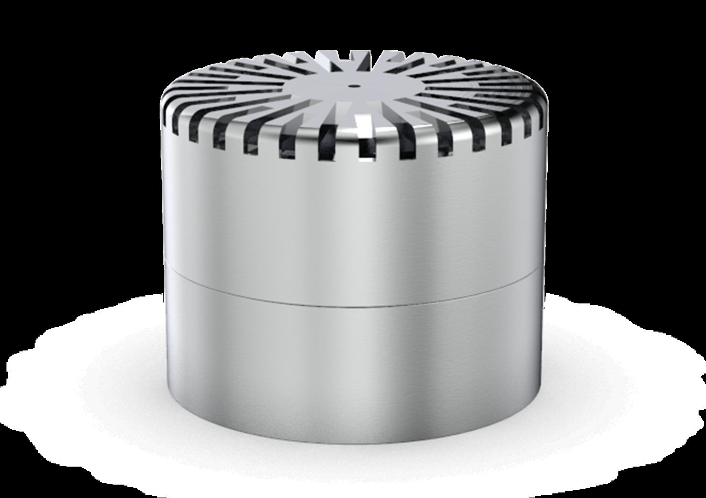
CRY3101
1-inch free-field prepolarized microphone with low noise and wide frequency response. Suited for precise acoustic testing applications.
| Sensitivity | 50 mV/Pa (–26 dBV/Pa) |
| Frequency Range | 4 Hz – 16 kHz |
| Dynamic Range | 12 dB – 146 dB |
| Polarization | 0 V |
| Operating Temp | –20°C to +60°C |
| Diameter × Height | 23.77 mm × 19 mm |

CRY3102
1-inch pressure-field prepolarized microphone for measuring real sound pressure on surfaces and inside enclosed cavities.
| Sensitivity | 50 mV/Pa (–26 dBV/Pa) |
| Frequency Range | 4 Hz – 8 kHz |
| Dynamic Range | 12 dB – 146 dB |
| Polarization | 0 V |
| Operating Temp | –20°C to +60°C |
| Diameter × Height | 23.77 mm × 19 mm |

CRY3103
1-inch free-field microphone with high sensitivity of 100 mV/Pa. Ideal for low-noise acoustic testing environments requiring maximum sensitivity.
| Sensitivity | 100 mV/Pa (–20 dBV/Pa) |
| Frequency Range | 4 Hz – 12 kHz |
| Dynamic Range | 10 dB – 130 dB |
| Polarization | 0 V |
| Operating Temp | –20°C to +60°C |
| Diameter × Height | 23.77 mm × 19 mm |
½″ Measurement Microphones
CRY3201
High-sensitivity 1/2-inch free-field microphone with wide 40 kHz bandwidth. Excellent for precision acoustic testing across a broad frequency range.
| Sensitivity | 12.5 mV/Pa (–38 dBV/Pa) |
| Frequency Range | 3.15 Hz – 40 kHz |
| Dynamic Range | 23 dB – 160 dB |
| Polarization | 0 V |
| Operating Temp | –30°C to +80°C |
| Diameter × Height | 13.2 mm × 12.7 mm |
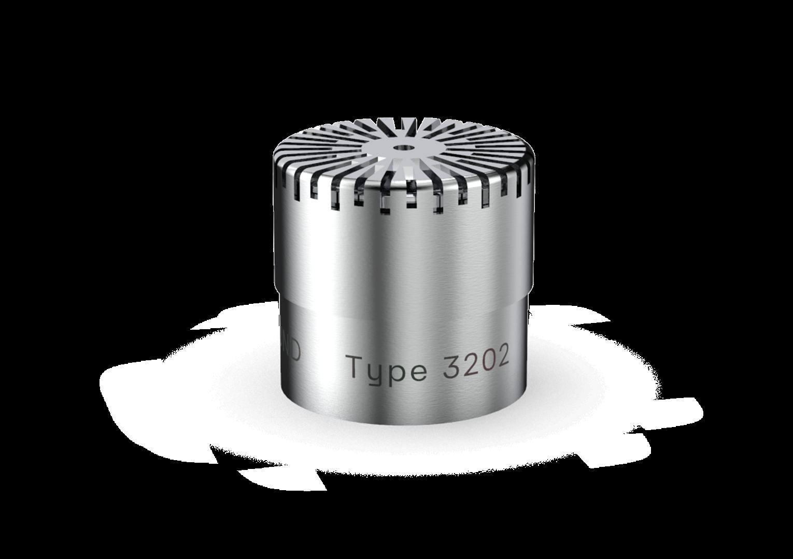
CRY3202
1/2-inch pressure-field microphone for coupler measurements, electroacoustics testing, telecom, and component testing in various industries.
| Sensitivity | 12.5 mV/Pa (–38 dBV/Pa) |
| Frequency Range | 3.15 Hz – 20 kHz |
| Dynamic Range | 23 dB – 160 dB |
| Polarization | 0 V |
| Operating Temp | –30°C to +80°C |
| Diameter × Height | 13.2 mm × 12.7 mm |
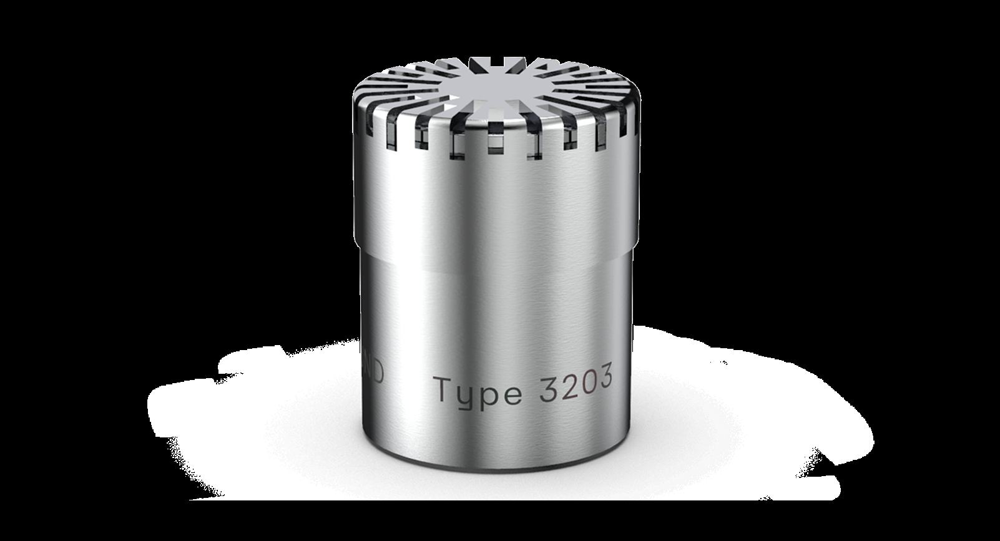
CRY3203
1/2-inch prepolarized free-field star product. Frequency range matches human auditory range (3.15 Hz–20 kHz), making it ideal for acoustic testing and environmental noise measurement.
| Sensitivity | 50 mV/Pa (–26 dBV/Pa) |
| Frequency Range | 3.15 Hz – 20 kHz |
| Dynamic Range | 16 dB – 146 dB |
| Polarization | 0 V |
| Operating Temp | –30°C to +80°C |
| Diameter × Height | 13.2 mm × 16.2 mm |
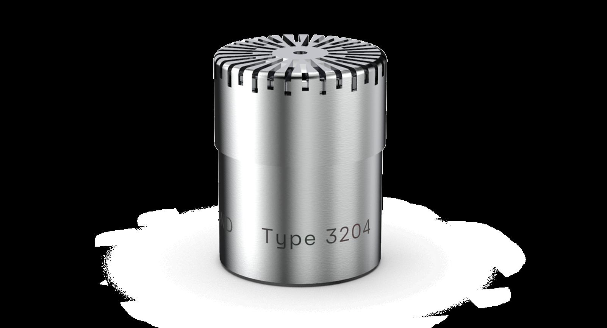
CRY3204
1/2-inch pressure-field prepolarized microphone optimized for high SPL measurements up to 146 dB, suitable for enclosed cavity sound pressure testing.
| Sensitivity | 50 mV/Pa (–26 dBV/Pa) |
| Frequency Range | 3.15 Hz – 10 kHz |
| Dynamic Range | 16 dB – 146 dB |
| Polarization | 0 V |
| Operating Temp | –30°C to +80°C |
| Diameter × Height | 13.2 mm × 16.2 mm |
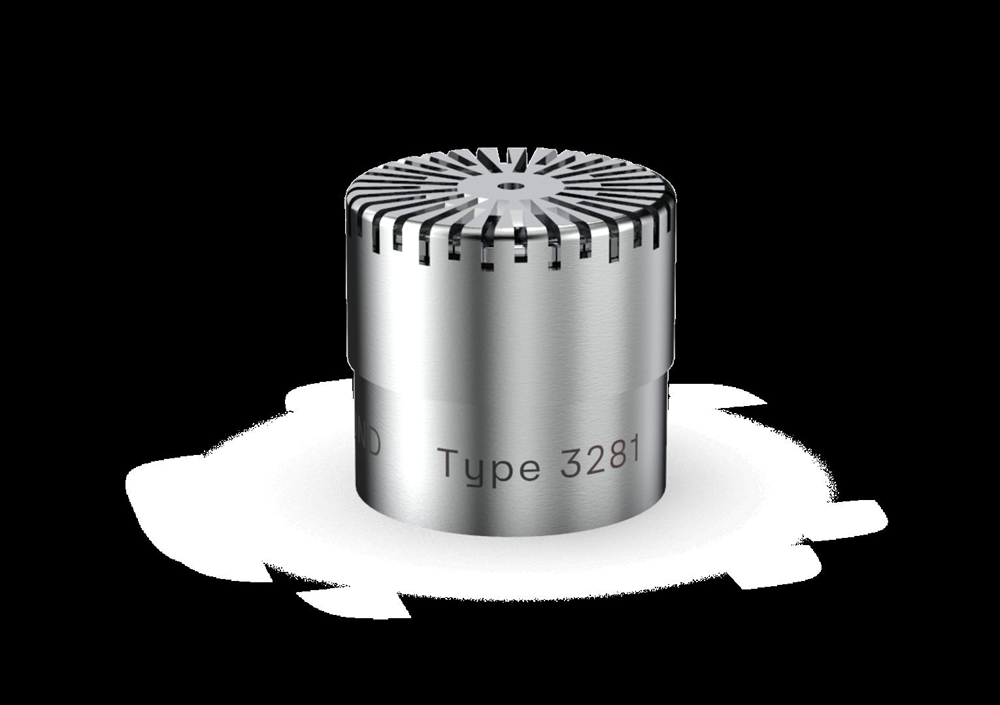
CRY3281
1/2-inch externally polarized free-field microphone (200V). Higher temperature tolerance and exceptional stability. Wide 40 kHz bandwidth with high 23–160 dB dynamic range.
| Sensitivity | 12.5 mV/Pa (–38 dBV/Pa) |
| Frequency Range | 3.15 Hz – 40 kHz |
| Dynamic Range | 23 dB – 160 dB |
| Polarization | 200 V (External) |
| Operating Temp | –30°C to +80°C |
| Diameter × Height | 13.2 mm × 12.7 mm |
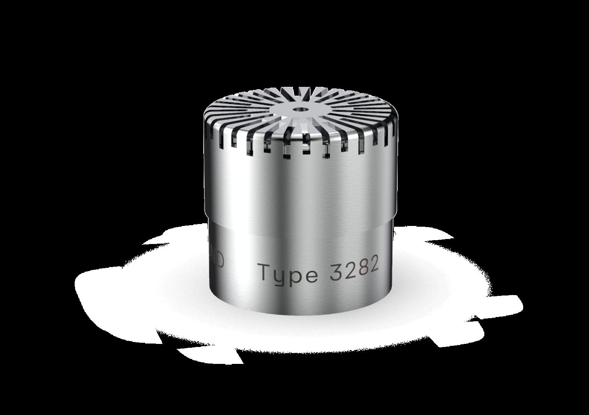
CRY3282
1/2-inch externally polarized pressure-field microphone (200V). Designed for high-precision coupler and enclosed cavity measurements requiring higher temperature performance.
| Sensitivity | 12.5 mV/Pa (–38 dBV/Pa) |
| Frequency Range | 3.15 Hz – 20 kHz |
| Dynamic Range | 23 dB – 160 dB |
| Polarization | 200 V (External) |
| Operating Temp | –30°C to +80°C |
| Diameter × Height | 13.2 mm × 12.7 mm |
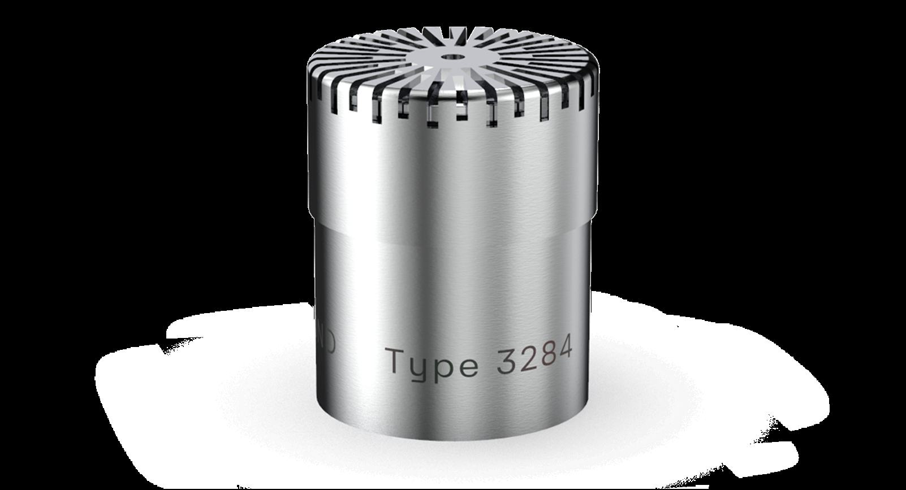
CRY3284
1/2-inch externally polarized pressure-field microphone (200V) with 50 mV/Pa sensitivity. High-sensitivity variant for low-noise pressure measurements in high-temperature environments.
| Sensitivity | 50 mV/Pa (–26 dBV/Pa) |
| Frequency Range | 3.15 Hz – 10 kHz |
| Dynamic Range | 16 dB – 146 dB |
| Polarization | 200 V (External) |
| Operating Temp | –30°C to +80°C |
| Diameter × Height | 13.2 mm × 16.2 mm |
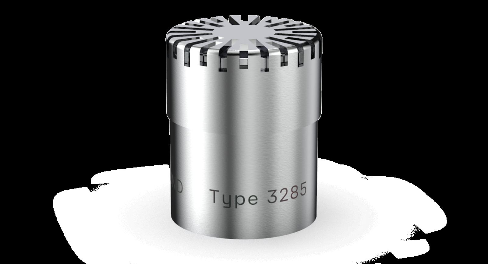
CRY3285
1/2-inch externally polarized free-field microphone (200V) with 50 mV/Pa sensitivity. High-sensitivity variant for free-field measurements in high-temperature environments.
| Sensitivity | 50 mV/Pa (–26 dBV/Pa) |
| Frequency Range | 3.15 Hz – 20 kHz |
| Dynamic Range | 16 dB – 146 dB |
| Polarization | 200 V (External) |
| Operating Temp | –30°C to +80°C |
| Diameter × Height | 13.2 mm × 16.2 mm |
¼″ Measurement Microphones
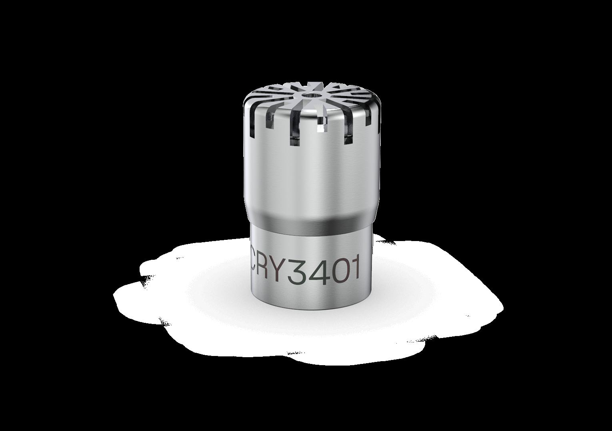
CRY3401
1/4-inch free-field microphone with high sensitivity for precision acoustic testing. Wide 40 kHz bandwidth with high SPL tolerance up to 144 dB.
| Sensitivity | 15.8 mV/Pa (–36 dBV/Pa) |
| Frequency Range | 4 Hz – 40 kHz |
| Dynamic Range | 26 dB – 144 dB |
| Polarization | 0 V |
| Operating Temp | –20°C to +60°C |
| Diameter × Height | 7.0 mm × 10.5 mm |
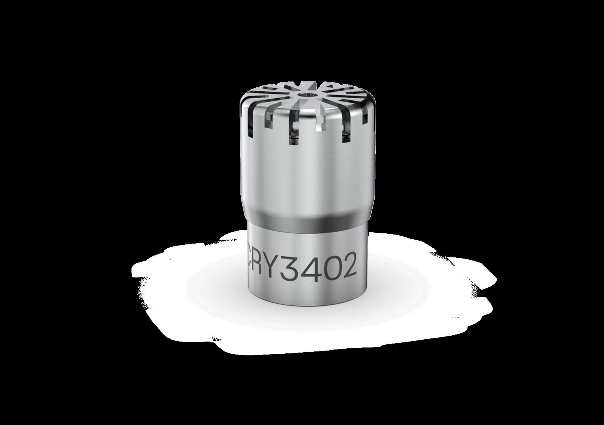
CRY3402
1/4-inch pressure-field microphone with 70 kHz bandwidth. Exceptional high-SPL tolerance up to 170 dB — suited for automotive and aerospace component testing.
| Sensitivity | 1.6 mV/Pa (–56 dBV/Pa) |
| Frequency Range | 4 Hz – 70 kHz |
| Dynamic Range | 45 dB – 170 dB |
| Polarization | 0 V |
| Operating Temp | –20°C to +60°C |
| Diameter × Height | 7.0 mm × 10.5 mm |
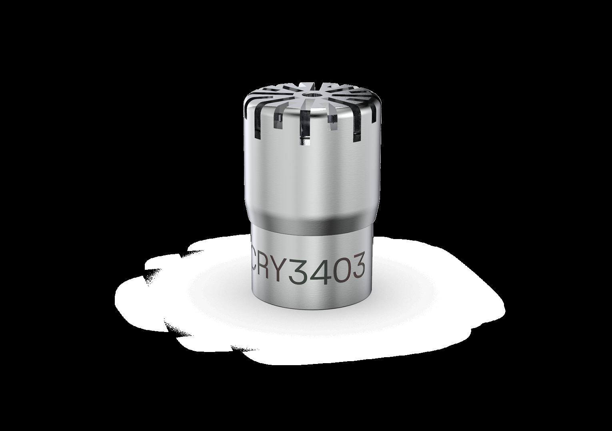
CRY3403
1/4-inch prepolarized free-field ultra-wideband microphone. Effective measurement range up to 90 kHz with extremely flat frequency response. Withstands SPL up to 165 dB (re. 20 µPa).
| Sensitivity | 4 mV/Pa (–48 dBV/Pa) |
| Frequency Range | 4 Hz – 90 kHz |
| Dynamic Range | 35 dB – 165 dB |
| Polarization | 0 V |
| Operating Temp | –30°C to +80°C |
| Diameter × Height | 7.0 mm × 10.5 mm |
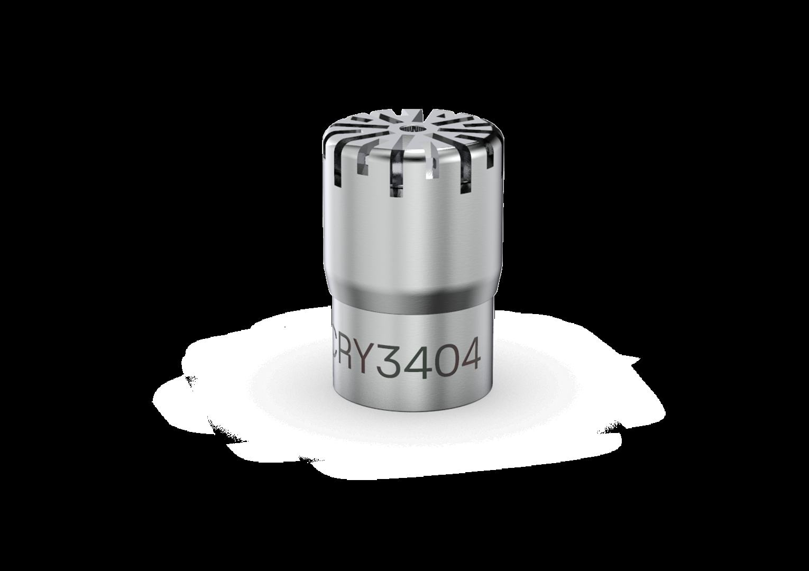
CRY3404
1/4-inch prepolarized pressure-field microphone for gunshot, explosion, and aviation/aerospace acoustic testing. Frequency response close to human hearing with ultra-high dynamic range.
| Sensitivity | 0.56 mV/Pa (–65 dBV/Pa) |
| Frequency Range | 10 Hz – 20 kHz |
| Dynamic Range | 59 dB – 175 dB |
| Polarization | 0 V |
| Operating Temp | –30°C to +70°C |
| Diameter × Height | 7.0 mm × 10.5 mm |
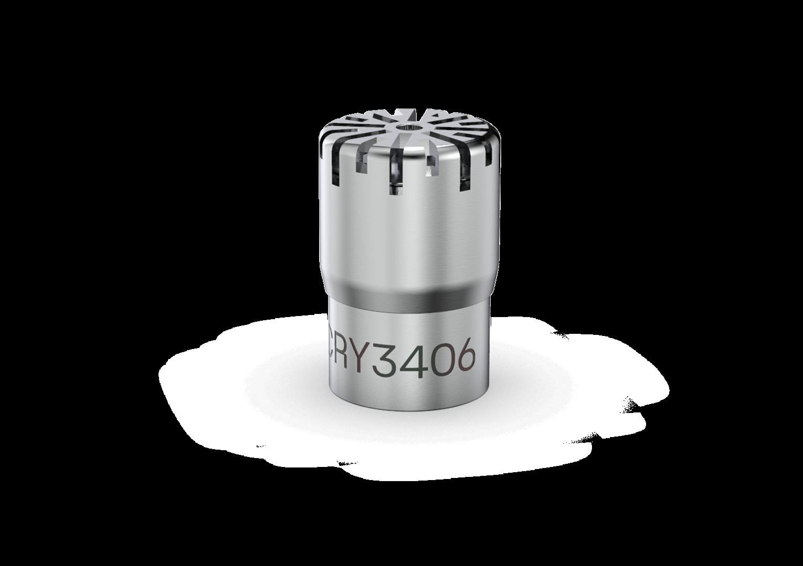
CRY3406
1/4-inch externally polarized pressure-field microphone (200V). Higher temperature tolerance for precision lab measurements. Wide 26–144 dB dynamic range.
| Sensitivity | 15.8 mV/Pa (–36 dBV/Pa) |
| Frequency Range | 4 Hz – 20 kHz |
| Dynamic Range | 26 dB – 144 dB |
| Polarization | 200 V (External) |
| Operating Temp | –20°C to +60°C |
| Diameter × Height | 7.0 mm × 10.5 mm |
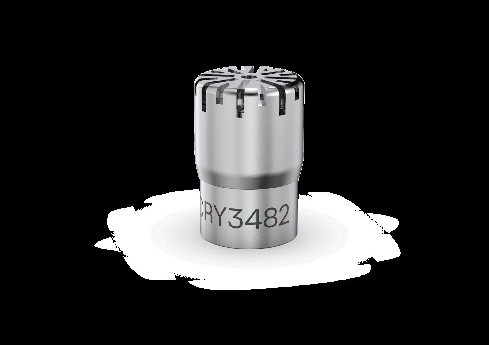
CRY3482
1/4-inch externally polarized pressure-field microphone (200V) with ultra-wide 70 kHz bandwidth and extreme 170 dB SPL tolerance. For high-temperature wideband pressure measurements.
| Sensitivity | 1.6 mV/Pa (–56 dBV/Pa) |
| Frequency Range | 4 Hz – 70 kHz |
| Dynamic Range | 45 dB – 170 dB |
| Polarization | 200 V (External) |
| Operating Temp | –30°C to +80°C |
| Diameter × Height | 7.0 mm × 10.5 mm |
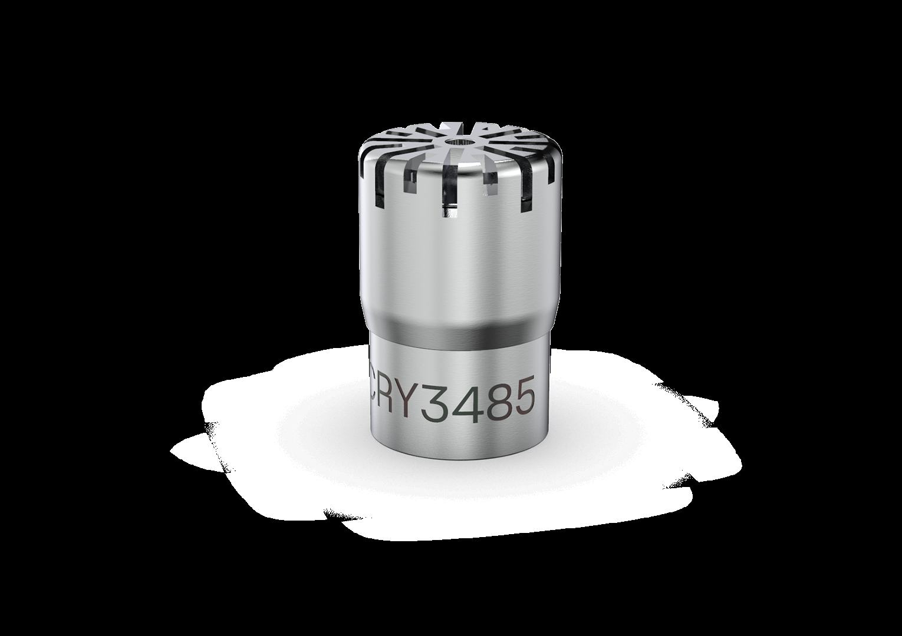
CRY3485
1/4-inch externally polarized free-field microphone (200V) with ultra-wide 90 kHz bandwidth. For high-temperature environments requiring ultra-wideband free-field measurements up to 165 dB.
| Sensitivity | 4 mV/Pa (–48 dBV/Pa) |
| Frequency Range | 4 Hz – 90 kHz |
| Dynamic Range | 35 dB – 165 dB |
| Polarization | 200 V (External) |
| Operating Temp | –30°C to +80°C |
| Diameter × Height | 7.0 mm × 10.5 mm |
Preamplifiers
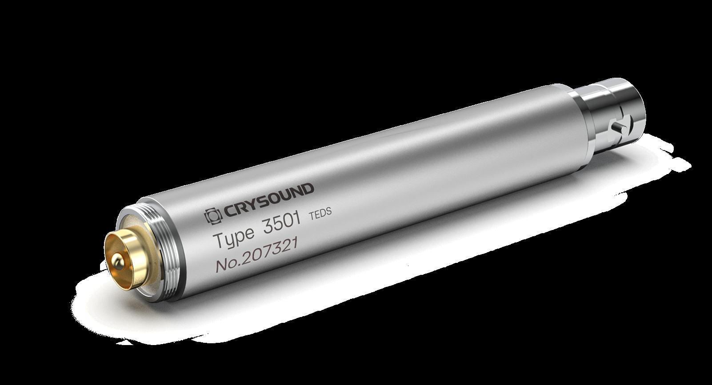
CRY3501
1/2-inch IEPE preamplifier with BNC interface. Ultra-wide 1 Hz–200 kHz bandwidth. Compatible with all prepolarized condenser microphones. TEDS per IEEE 1451.4 V1.0.
| Frequency Response | 1 Hz – 200 kHz |
| Power Supply | IEPE (2–20 mA) |
| Max Output Voltage | >10.0 Vp |
| Interface | BNC |
| Height | 80.5 mm |
| TEDS | IEEE 1451.4 V1.0 |
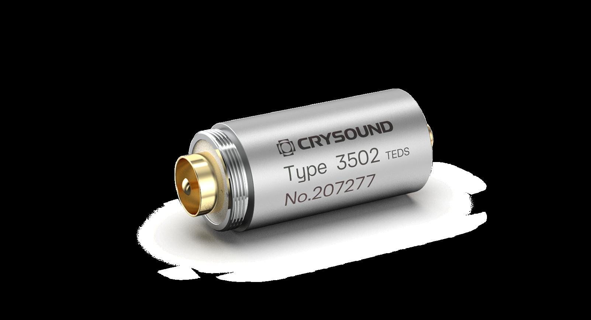
CRY3502
1/2-inch IEPE preamplifier with SMB interface. Ultra-wide 1 Hz–200 kHz bandwidth. Compatible with all prepolarized condenser microphones. TEDS per IEEE 1451.4 V1.0.
| Frequency Response | 1 Hz – 200 kHz |
| Power Supply | IEPE (2–20 mA) |
| Max Output Voltage | >10.0 Vp |
| Interface | SMB |
| Height | 29.2 mm |
| TEDS | IEEE 1451.4 V1.0 |
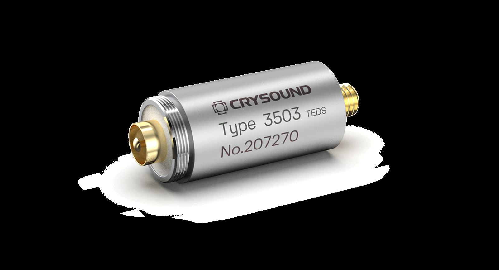
CRY3503
1/2-inch IEPE preamplifier with 10-32UNF interface. Ultra-wide 1 Hz–200 kHz bandwidth. Compatible with all prepolarized condenser microphones. TEDS per IEEE 1451.4 V1.0.
| Frequency Response | 1 Hz – 200 kHz |
| Power Supply | IEPE (2–20 mA) |
| Max Output Voltage | >10.0 Vp |
| Interface | 10-32UNF |
| Height | 29.2 mm |
| TEDS | IEEE 1451.4 V1.0 |
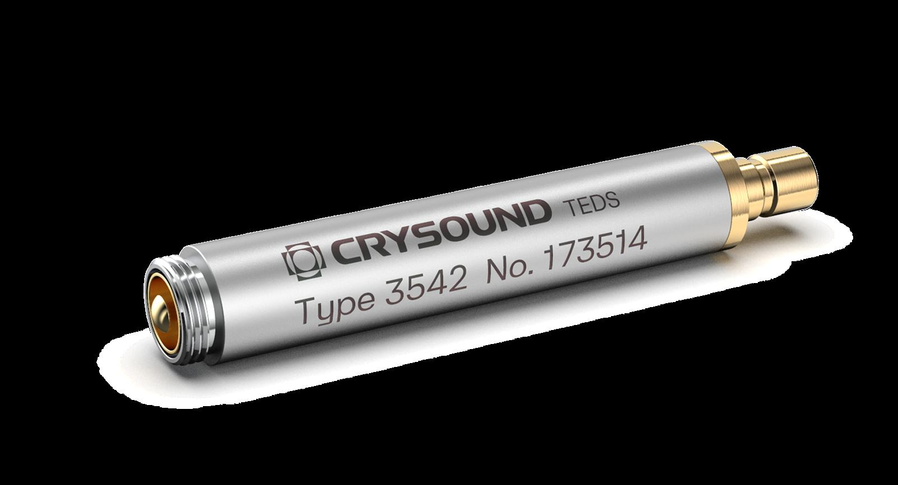
CRY3541
1/4-inch IEPE preamplifier with SMB interface. Ultra-wide 1 Hz–200 kHz bandwidth for wideband acoustic measurements. TEDS support per IEEE 1451.4 V1.0.
| Frequency Response | 1 Hz – 200 kHz |
| Power Supply | IEPE (2–20 mA) |
| Max Output Voltage | >10.0 Vp |
| Interface | SMB |
| Height | 47.8 mm |
| TEDS | IEEE 1451.4 V1.0 |

CRY3542
1/4-inch IEPE preamplifier with SMB interface and low-frequency coverage starting at 3 Hz. For infrasound-capable wideband acoustic measurements up to 200 kHz.
| Frequency Response | 3 Hz – 200 kHz |
| Power Supply | IEPE (2–20 mA) |
| Max Output Voltage | >10.0 Vp |
| Interface | SMB |
| Height | 33.8 mm |
| TEDS | IEEE 1451.4 V1.0 |
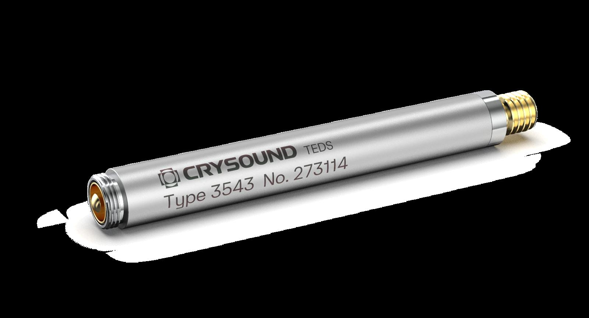
CRY3543
1/4-inch IEPE preamplifier with 10-32UNF interface. Ultra-wide 1 Hz–200 kHz bandwidth. TEDS support per IEEE 1451.4 V1.0.
| Frequency Response | 1 Hz – 200 kHz |
| Power Supply | IEPE (2–20 mA) |
| Max Output Voltage | >10.0 Vp |
| Interface | 10-32UNF |
| Height | 47.8 mm |
| TEDS | IEEE 1451.4 V1.0 |
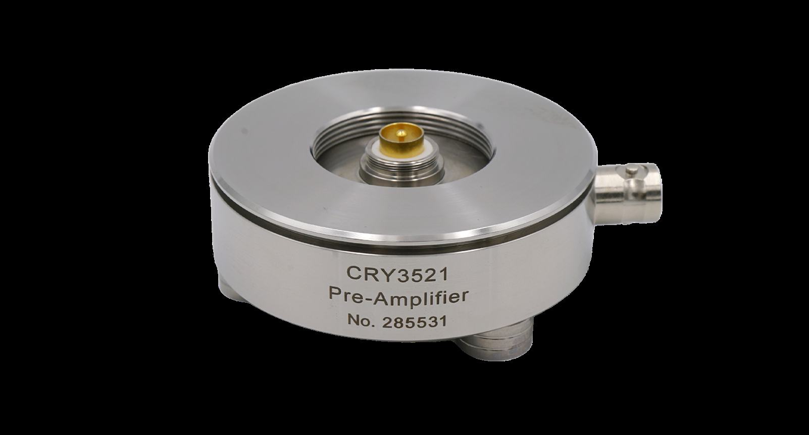
CRY3521
Specialized flat-disc preamplifier with BNC interface and extended low-frequency coverage (10 Hz–100 kHz). Compatible with all prepolarized condenser microphones.
| Frequency Response | 10 Hz – 100 kHz |
| Power Supply | IEPE (2–20 mA) |
| Max Output Voltage | >7.0 Vp |
| Interface | BNC |
| Thread Diameter | 11.7 mm–60 UNS |
Measurement Microphone Sets
1″ Microphone Sets
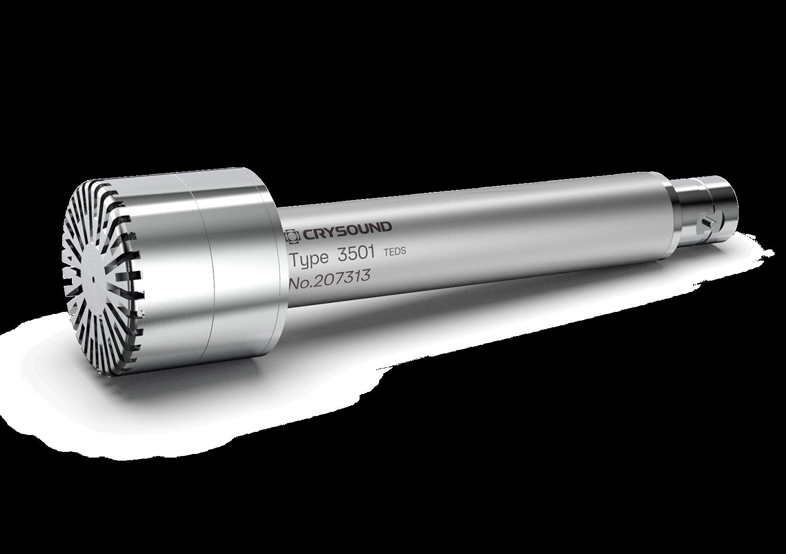
CRY3101-S01 Microphone Set
1-inch free-field measurement microphone kit with IEPE preamplifier. BNC interface with TEDS support. For precise acoustic testing in low-noise environments.
| Field Type | Free-Field |
| Sensitivity | 50 mV/Pa (–26 dBV/Pa) |
| Frequency Range | 4 Hz – 16 kHz |
| Dynamic Range | 12 dB – 138 dB |
| Interface | BNC |
| TEDS | IEEE 1451.4 V1.0 |

CRY3102-S01 Microphone Set
1-inch pressure-field measurement microphone kit with IEPE preamplifier. Ideal for coupler measurements, enclosed cavity sound pressure, and electroacoustic testing.
| Field Type | Pressure-Field |
| Sensitivity | 50 mV/Pa (–26 dBV/Pa) |
| Frequency Range | 4 Hz – 8 kHz |
| Dynamic Range | 12 dB – 138 dB |
| Interface | BNC |
| TEDS | IEEE 1451.4 V1.0 |
½″ Microphone Sets
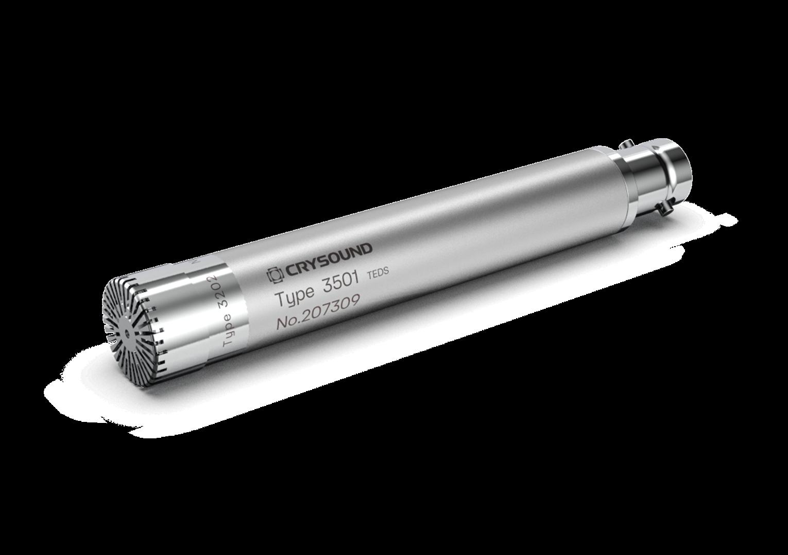
CRY3201-S01 Microphone Set
½-inch free-field microphone kit with ultra-wide 40 kHz bandwidth. BNC interface with TEDS. Suitable for precision acoustic testing across a broad frequency range.
| Field Type | Free-Field |
| Sensitivity | 12.5 mV/Pa (–38 dBV/Pa) |
| Frequency Range | 3.15 Hz – 40 kHz |
| Dynamic Range | 23 dB – 148 dB |
| Interface | BNC |
| TEDS | IEEE 1451.4 V1.0 |

CRY3203-S01 Microphone Set
General-purpose ½-inch measurement microphone kit — the optimal solution for acoustic testing. Includes microphone + IEPE preamplifier, BNC interface, TEDS.
| Field Type | Free-Field |
| Sensitivity | 50 mV/Pa (–26 dBV/Pa) |
| Frequency Range | 3.15 Hz – 20 kHz |
| Dynamic Range | 15 dB – 138 dB |
| Interface | BNC |
| TEDS | IEEE 1451.4 V1.0 |
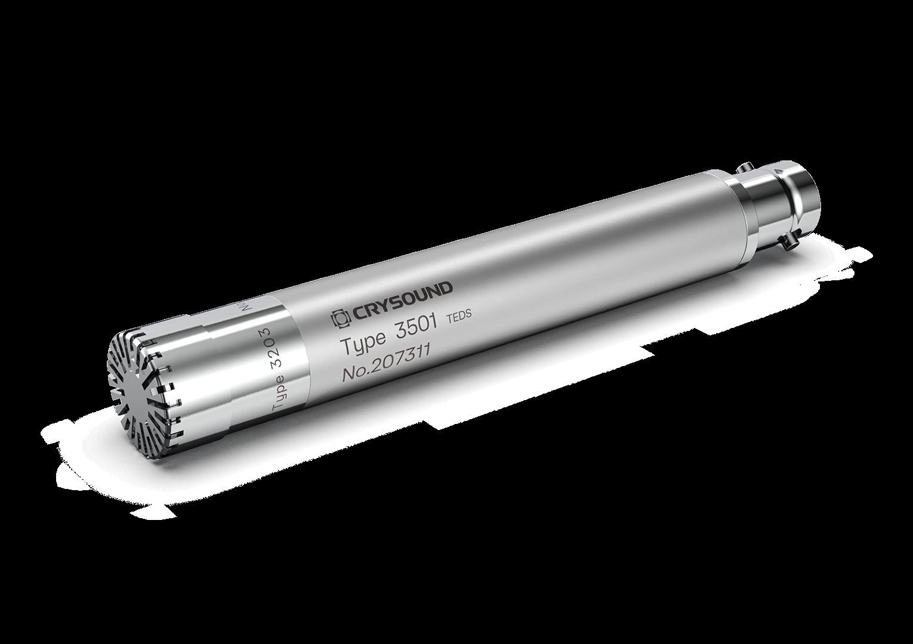
CRY3203-S02 Microphone Set
General-purpose ½-inch free-field microphone kit with 10-32UNF connector — same acoustic performance as CRY3203-S01 in a different interface configuration.
| Field Type | Free-Field |
| Sensitivity | 50 mV/Pa (–26 dBV/Pa) |
| Frequency Range | 3.15 Hz – 20 kHz |
| Dynamic Range | 15 dB – 138 dB |
| Interface | 10-32UNF |
| TEDS | IEEE 1451.4 V1.0 |
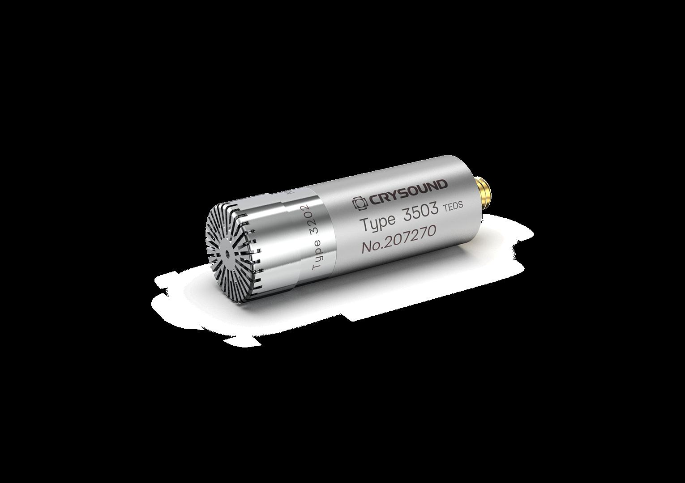
CRY3202-S01 Microphone Set
½-inch pressure-field microphone kit with BNC interface. For coupler measurements, enclosed cavity testing, telecom and electroacoustic component testing.
| Field Type | Pressure-Field |
| Sensitivity | 12.5 mV/Pa (–38 dBV/Pa) |
| Frequency Range | 3.15 Hz – 20 kHz |
| Dynamic Range | 23 dB – 150 dB |
| Interface | BNC |
| TEDS | IEEE 1451.4 V1.0 |
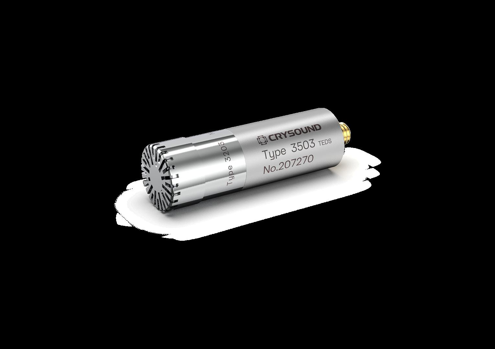
CRY3202-S02 Microphone Set
½-inch pressure-field kit with 10-32UNF connector — same acoustic performance as CRY3202-S01 in a 10-32UNF interface configuration.
| Field Type | Pressure-Field |
| Sensitivity | 12.5 mV/Pa (–38 dBV/Pa) |
| Frequency Range | 3.15 Hz – 20 kHz |
| Dynamic Range | 23 dB – 150 dB |
| Interface | 10-32UNF |
| TEDS | IEEE 1451.4 V1.0 |
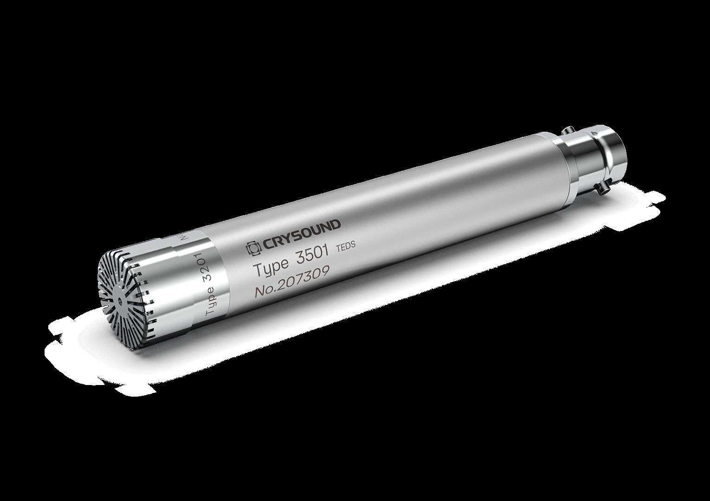
CRY3204-S01 Microphone Set
½-inch pressure-field kit with 50 mV/Pa sensitivity. BNC interface. Optimized for high sound pressure level measurements up to 138 dB in enclosed cavities.
| Field Type | Pressure-Field |
| Sensitivity | 50 mV/Pa (–26 dBV/Pa) |
| Frequency Range | 3.15 Hz – 10 kHz |
| Dynamic Range | 15 dB – 138 dB |
| Interface | BNC |
| TEDS | IEEE 1451.4 V1.0 |
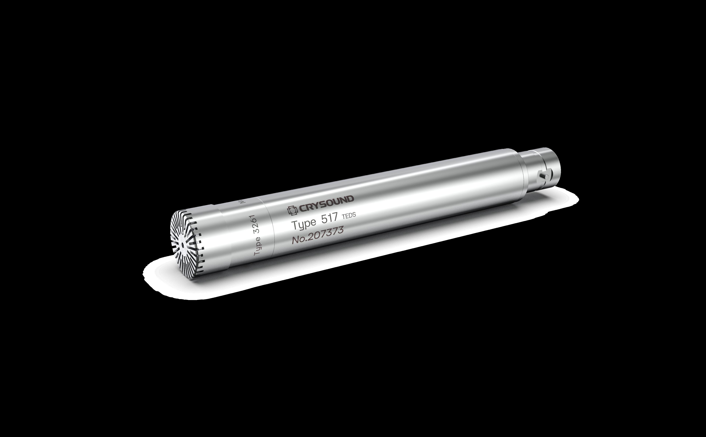
CRY3261-S02 Microphone Set
½-inch free-field ultra-low noise microphone set with only 6.5 dBA background noise — ideal for ultra-quiet environments measuring product self-noise, appliance noise, and transformer noise.
| Field Type | Free-Field |
| Sensitivity | 450 mV/Pa (–7 dBV/Pa) |
| Frequency Range | 10 Hz – 16 kHz ±2 dB |
| Dynamic Range | 6.5 dB – 100 dB |
| Interface | BNC |
| TEDS | IEEE 1451.4 V1.0 |
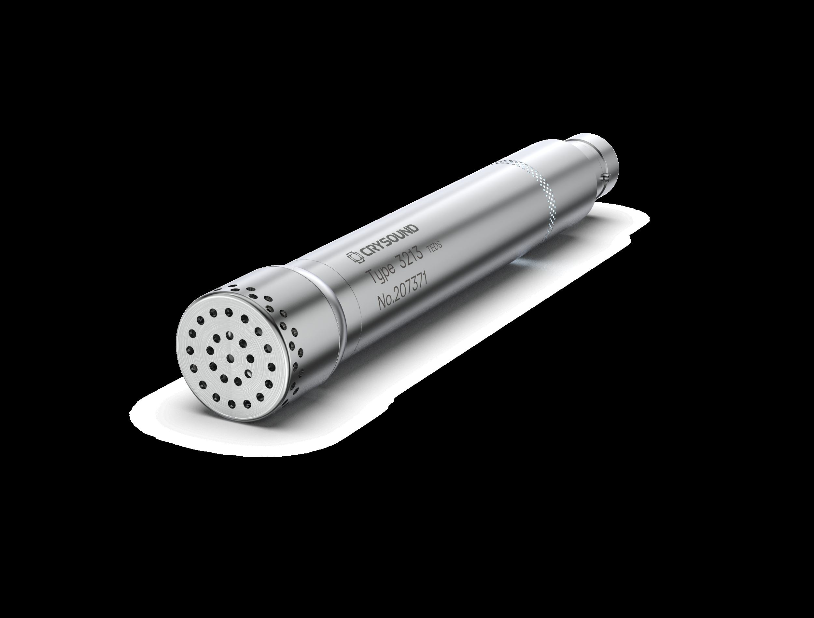
CRY3213 Microphone Set
½-inch free-field measurement microphone set with BNC interface. General-purpose solution for acoustic testing with IEPE-powered preamplifier and TEDS support.
| Field Type | Free-Field |
| Sensitivity | 50 mV/Pa (–26 dBV/Pa) |
| Frequency Range | 3.15 Hz – 20 kHz ±2 dB |
| Dynamic Range | 17 dB – 136 dB |
| Interface | BNC |
| TEDS | IEEE 1451.4 V1.0 |
¼″ Microphone Sets
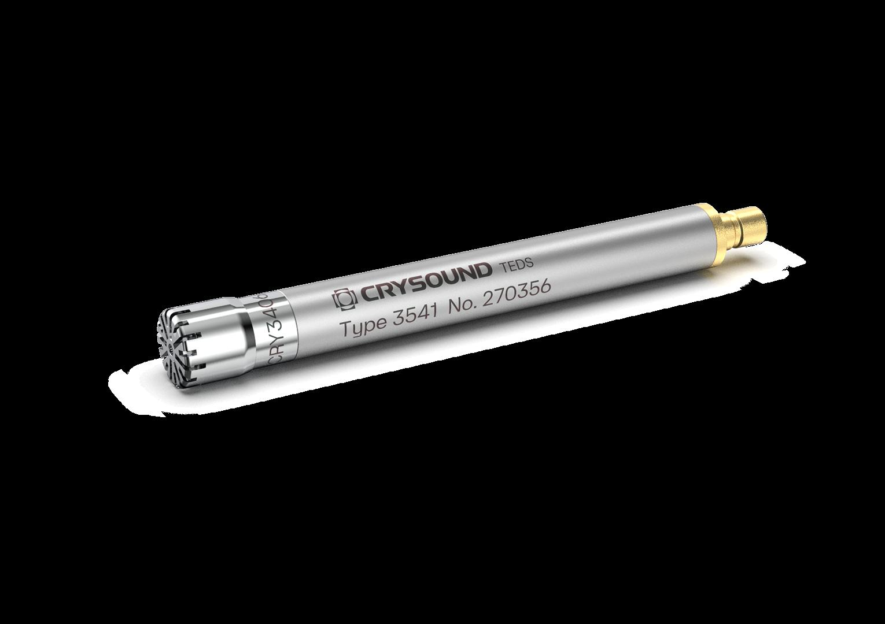
CRY3401-S01 Microphone Set
¼-inch free-field microphone kit with SMB connector and wide 40 kHz bandwidth. For precision acoustic testing with high SPL tolerance up to 148 dB.
| Field Type | Free-Field |
| Sensitivity | 15.8 mV/Pa (–36 dBV/Pa) |
| Frequency Range | 4 Hz – 40 kHz |
| Dynamic Range | 26 dB – 148 dB |
| Interface | SMB |
| TEDS | IEEE 1451.4 V1.0 |
CRY3402-S01 Microphone Set
¼-inch pressure-field kit with 70 kHz bandwidth and extreme SPL tolerance up to 168 dB. BNC interface. Suited for automotive, aerospace, and high-pressure component testing.
| Field Type | Pressure-Field |
| Sensitivity | 1.6 mV/Pa (–56 dBV/Pa) |
| Frequency Range | 4 Hz – 70 kHz |
| Dynamic Range | 45 dB – 168 dB |
| Interface | 10-32UNF |
| TEDS | IEEE 1451.4 V1.0 |
CRY3402-S02 Microphone Set
¼-inch pressure-field kit with 70 kHz bandwidth — alternate body configuration of the CRY3402-S01. Same acoustic performance, 168 dB SPL tolerance.
| Field Type | Pressure-Field |
| Sensitivity | 1.6 mV/Pa (–56 dBV/Pa) |
| Frequency Range | 4 Hz – 70 kHz |
| Dynamic Range | 45 dB – 168 dB |
| Interface | 10-32UNF |
| TEDS | IEEE 1451.4 V1.0 |
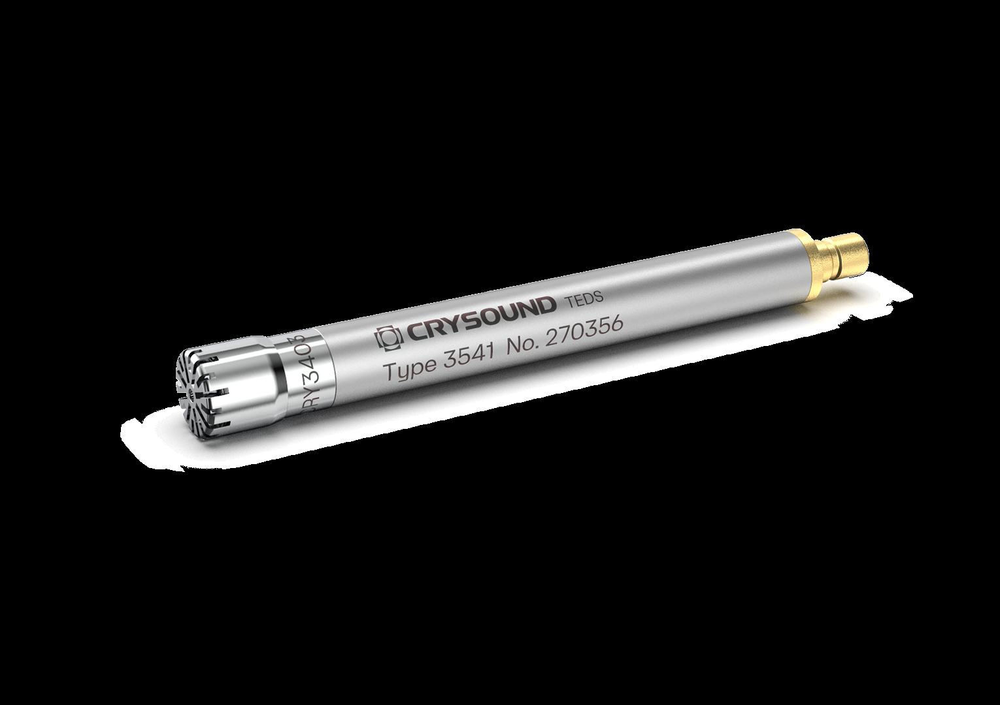
CRY3403-S01 Microphone Set
Ultra-wideband ¼-inch microphone kit measuring frequencies up to 90 kHz. Available with SMB (S01) or 10-32UNF (S02) connector. Ideal for high-frequency testing.
| Field Type | Free-Field |
| Sensitivity | 4 mV/Pa (–48 dBV/Pa) |
| Frequency Range | 4 Hz – 90 kHz |
| Dynamic Range | 35 dB – 160 dB |
| Interface | SMB / 10-32UNF |
| TEDS | IEEE 1451.4 V1.0 |
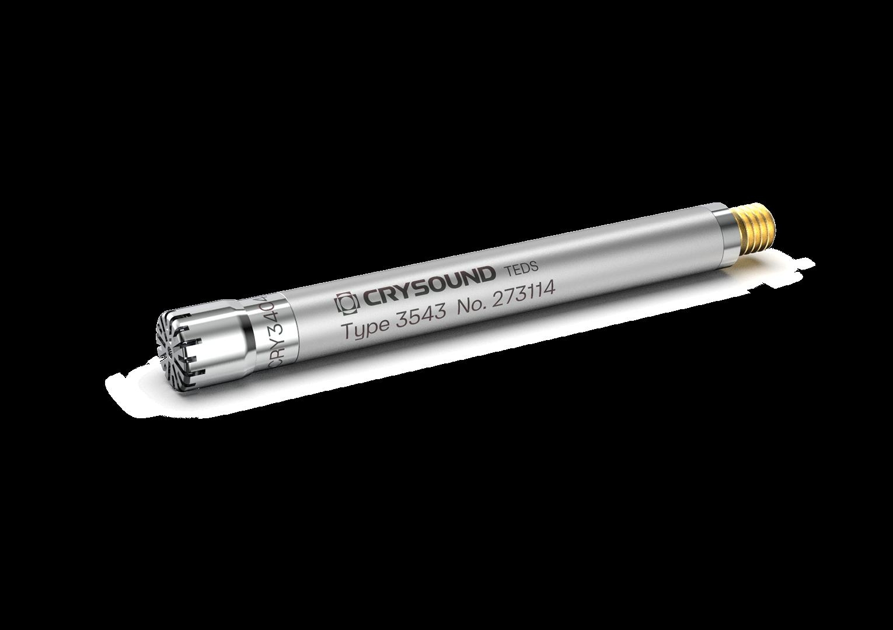
CRY3404-S01 Microphone Set
High-SPL ¼-inch microphone kit withstanding extreme sound pressure up to 175 dB. For reliable acoustic testing in high-intensity environments — aviation, ordnance testing.
| Field Type | Pressure-Field |
| Sensitivity | 0.56 mV/Pa (–65 dBV/Pa) |
| Frequency Range | 10 Hz – 20 kHz |
| Dynamic Range | 53 dB – 175 dB |
| Interface | 10-32UNF |
| TEDS | IEEE 1451.4 V1.0 |

CRY3403-S02 Microphone Set
Ultra-wideband ¼-inch microphone kit measuring frequencies up to 90 kHz with 10-32UNF connector. For high-frequency and broadband acoustic testing applications.
| Field Type | Free-Field |
| Sensitivity | 4 mV/Pa (–48 dBV/Pa) |
| Frequency Range | 4 Hz – 90 kHz |
| Dynamic Range | 35 dB – 160 dB |
| Interface | 10-32UNF |
| TEDS | IEEE 1451.4 V1.0 |
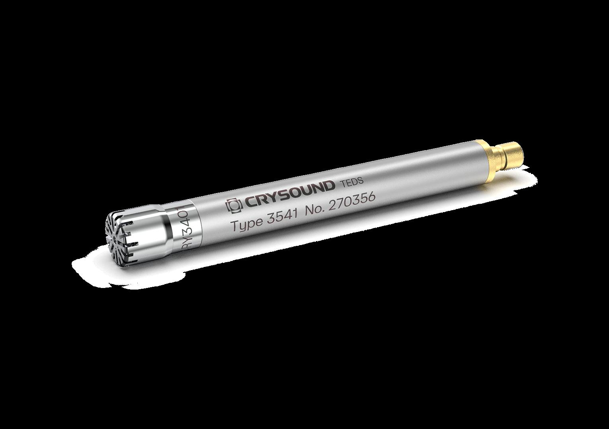
CRY3406-S01 Microphone Set
¼-inch pressure-field microphone kit with SMB connector. Wide dynamic range (26–148 dB) for versatile applications from precision lab measurements to industrial testing.
| Field Type | Pressure-Field |
| Sensitivity | 15.8 mV/Pa (–36 dBV/Pa) |
| Frequency Range | 4 Hz – 20 kHz |
| Dynamic Range | 26 dB – 148 dB |
| Interface | SMB |
| TEDS | IEEE 1451.4 V1.0 |
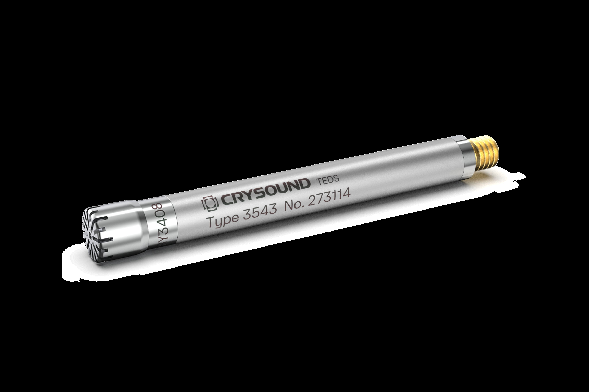
CRY3408-S01 Microphone Set
¼-inch pressure-field kit for extreme SPL environments up to 180 dB. Ultra-low sensitivity (0.14 mV/Pa) for measuring blasts, explosions, and high-intensity industrial noise.
| Field Type | Pressure-Field |
| Sensitivity | 0.14 mV/Pa (–77 dBV/Pa) |
| Frequency Range | 10 Hz – 20 kHz |
| Dynamic Range | 70 dB – 180 dB |
| Interface | 10-32UNF |
| TEDS | IEEE 1451.4 V1.0 |
Ear Simulators & Couplers
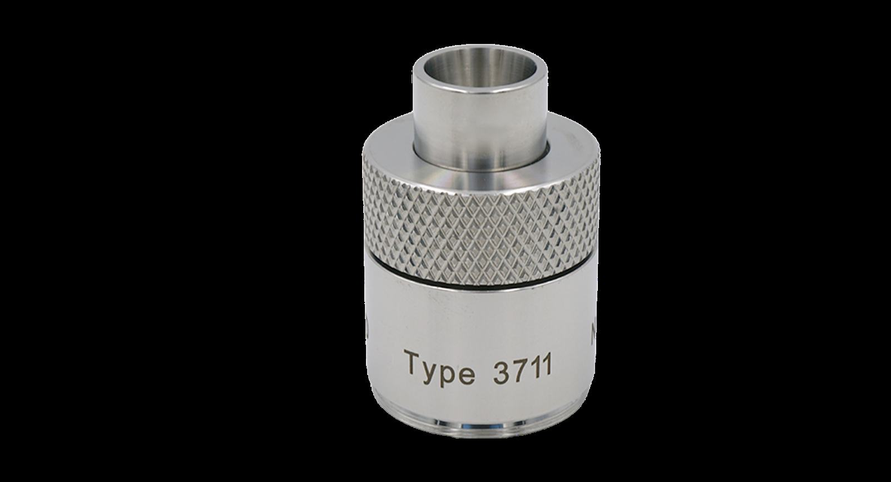
CRY3711 Ear Simulator
Artificial ear precisely simulating human ear acoustics per IEC 60318-4. Ideal for standardized testing of headphones, hearing aids, and in-ear devices.
| Standard | IEC 60318-4 |
| Frequency Response | 100 Hz – 10 kHz ±1 dB |
| Coupling Cavity Use | 20 Hz – 16 kHz |
| Equivalent Volume | 1.26 cm³ |
| Weight | 72 g |

CRY3717 Ear Canal Simulator
IEC 60318-3 occluded-ear canal simulator with 6 cm³ volume. For standardized hearing aid and insert earphone testing across 100 Hz – 8 kHz frequency range.
| Standard | IEC 60318-3 |
| Equivalent Volume | 6 cm³ |
| Frequency Range | 100 Hz – 8 kHz |
| Weight | 355 g |

CRY3719 Ear Canal Coupler
IEC 60318-5 ear canal coupler with 2 cm³ volume. For standardized insert earphone and small hearing device acoustic measurement across 100 Hz – 8 kHz.
| Standard | IEC 60318-5 |
| Equivalent Volume | 2 cm³ |
| Frequency Range | 100 Hz – 8 kHz |
| Weight | 50 g |

CRY3718 Ear Simulator
Artificial ear per IEC 60318-1, simulating the acoustic impedance of the human ear canal. Ideal for headphone and hearing aid standardized testing. Coupling cavity range 20 Hz–16 kHz.
| Standard | IEC 60318-1 |
| Frequency Response | 100 Hz – 4 kHz ±1 dB |
| Coupling Cavity Use | 20 Hz – 16 kHz |
| Weight | 147 g |
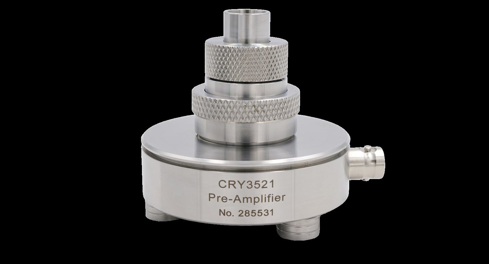
CRY3711-S01 Ear Simulator Kit
Base-mounted artificial ear kit — widely used for acoustic measurements of in-ear headphones. Complies with IEC 61094-4. BNC interface, ready-to-use configuration.
| Standard | IEC 61094-4 |
| Frequency Response | 20 Hz – 16 kHz |
| Dynamic Range | 23 dB – 146 dBA |
| Interface | BNC |
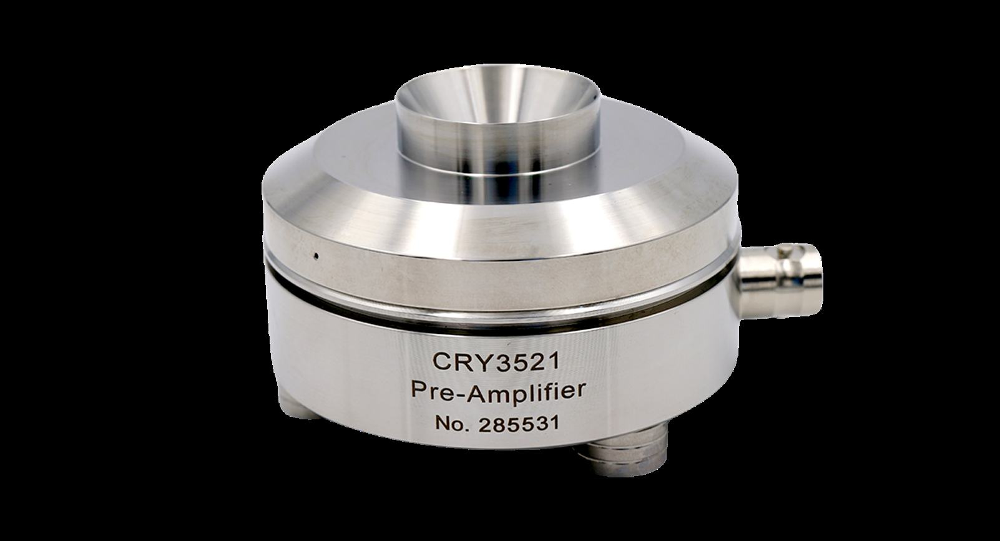
CRY3721-S01 Ear Simulator Kit
Ear simulator set compliant with IEC 61094-4. Wide 20 Hz–20 kHz frequency coverage with ultra-low noise floor of 7.5 dBA. Suitable for high-fidelity in-ear headphone measurement.
| Standard | IEC 61094-4 |
| Frequency Response | 20 Hz – 20 kHz |
| Dynamic Range | 7.5 dB – 115 dBA |
| Interface | — |
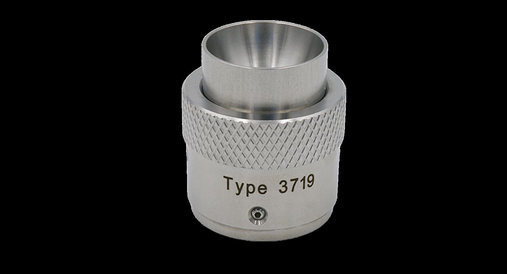
CRY3719-S01 Ear Simulator Kit
Ear simulator kit for IEC 61094-5. SMB interface with 23–146 dB dynamic range. Designed for insert earphone and small hearing device acoustic measurement.
| Standard | IEC 61094-5 |
| Frequency Response | 125 Hz – 8 kHz |
| Dynamic Range | 23 dB – 146 dB |
| Interface | SMB |
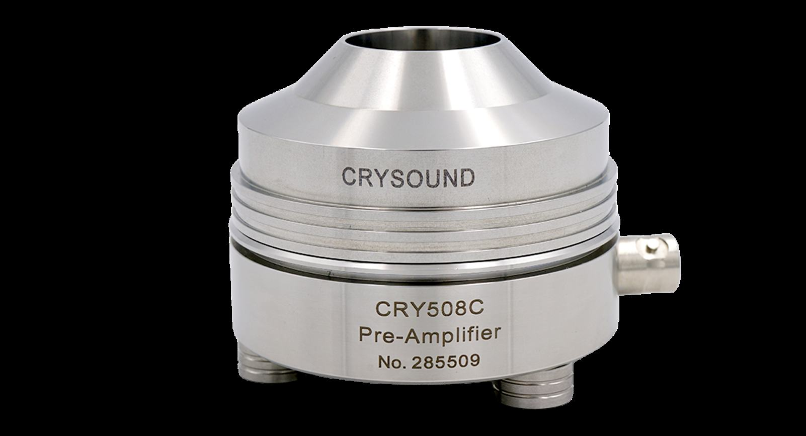
CRY3717-S01 Ear Simulator Kit
Occluded-ear canal simulator kit per IEC 61094-3. BNC interface with 12–132 dB dynamic range. For standardized hearing aid and insert earphone measurements.
| Standard | IEC 61094-3 |
| Frequency Response | 100 Hz – 8 kHz |
| Dynamic Range | 12 dB – 132 dB |
| Interface | BNC |

CRY3718-S01 Ear Simulator Kit
IEC 61094-1 compliant ear simulator kit with BNC interface. Simulates human ear impedance (100 Hz–4 kHz) and coupling cavity acoustics (20 Hz–16 kHz).
| Standard | IEC 61094-1 |
| Ear Impedance Range | 100 Hz – 4 kHz |
| Coupling Cavity Range | 20 Hz – 16 kHz |
| Dynamic Range | 23 dB – 146 dB |
| Interface | BNC |

CRY3718-S05 Ear Simulator Kit
IEC 61094-1 kit with BNC interface, TA0701 IEC 60318-1 coupler, and TA0515 adapter included. Complete solution for over-ear headphone and hearing aid testing.
| Standard | IEC 61094-1 |
| Ear Impedance Range | 100 Hz – 4 kHz |
| Coupling Cavity Range | 20 Hz – 16 kHz |
| Dynamic Range | 23 dB – 146 dB |
| Interface | BNC |
| Accessories | TA0701 + TA0515 Adapter |
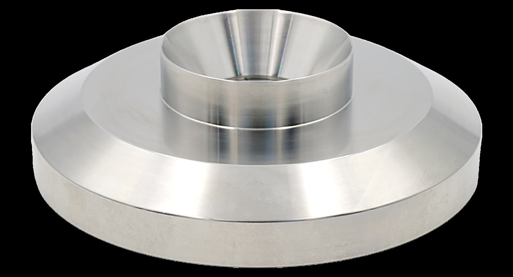
CRY3718-S07 Ear Simulator Kit
IEC 61094-1 kit with SMB interface, TA0701 IEC 60318-1 coupler, and TA0515 adapter. SMB variant for use with compatible measurement systems.
| Standard | IEC 61094-1 |
| Ear Impedance Range | 100 Hz – 4 kHz |
| Coupling Cavity Range | 20 Hz – 16 kHz |
| Dynamic Range | 23 dB – 146 dB |
| Interface | SMB |
| Accessories | TA0701 + TA0515 Adapter |
Accelerometers
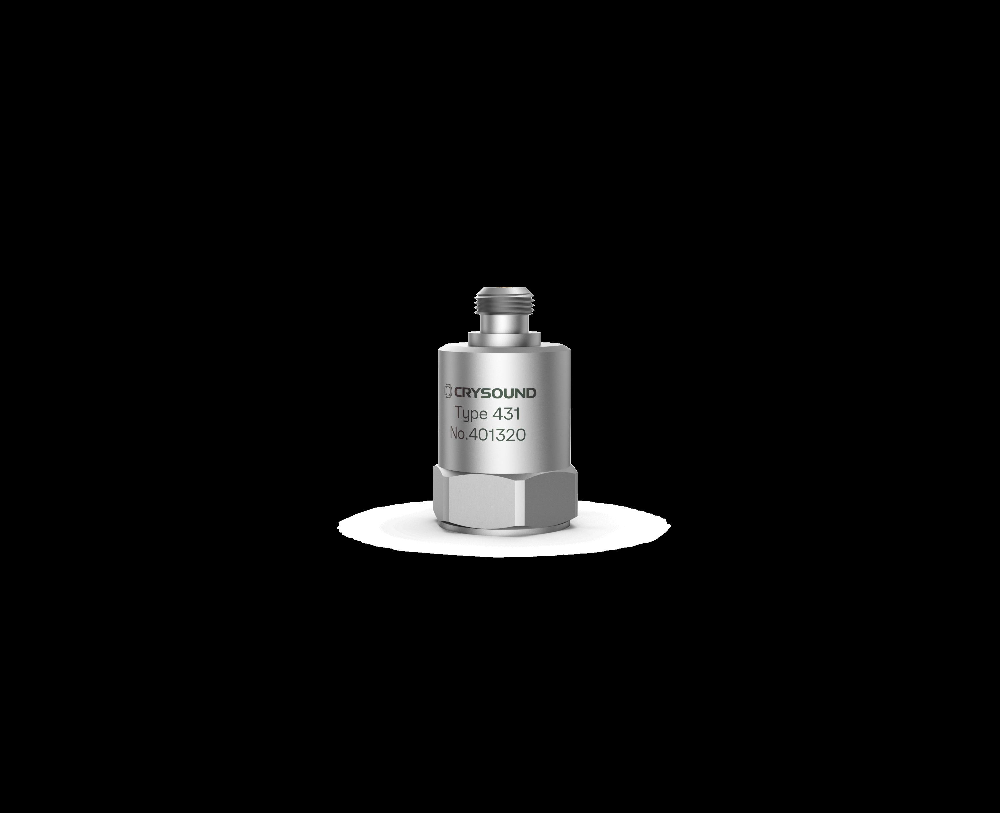
CRY431
IEPE piezoelectric accelerometer with Top M5 connector. Wide ±1000g measuring range for industrial vibration monitoring of acceleration, velocity, and displacement.
| Sensitivity | 5 mV/g |
| Frequency Response | 1 Hz – 12 kHz (±1 dB) |
| Measuring Range | ±1000 g (peak) |
| Power Supply | IEPE (2–10 mA) |
| Connector | Top M5 |
| Weight | 9.5 g |
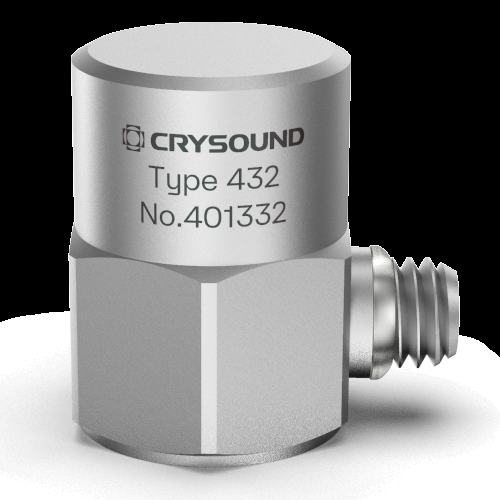
CRY432
IEPE piezoelectric accelerometer with Side M5 connector. Same wide ±1000g range as CRY431 in a side-mounted configuration for constrained mounting locations.
| Sensitivity | 5 mV/g |
| Frequency Response | 1 Hz – 12 kHz (±1 dB) |
| Measuring Range | ±1000 g (peak) |
| Power Supply | IEPE (2–10 mA) |
| Connector | Side M5 |
| Weight | 9.5 g |
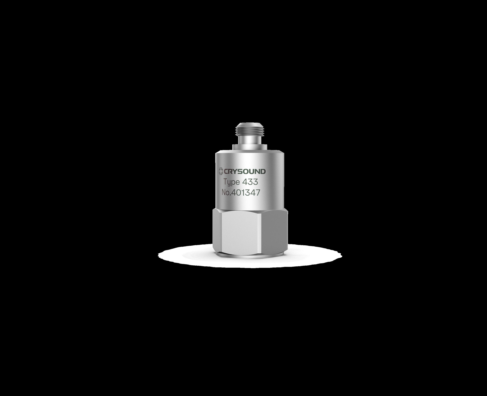
CRY433
High-sensitivity 100 mV/g IEPE accelerometer with Top M5 connector. ±50g range for precise vibration measurement of moderate-level vibrations.
| Sensitivity | 100 mV/g |
| Frequency Response | 0.5 Hz – 8 kHz (±1 dB) |
| Measuring Range | ±50 g (peak) |
| Power Supply | IEPE (2–10 mA) |
| Connector | Top M5 |
| Weight | 13 g |
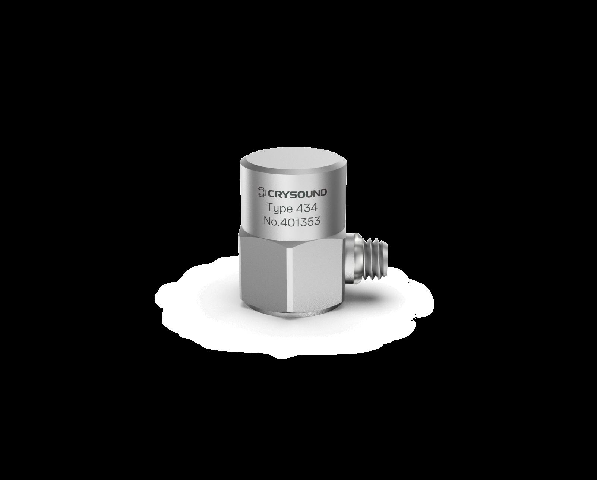
CRY434
High-sensitivity 100 mV/g IEPE accelerometer with Side M5 connector. ±50g range — side-mounted variant of CRY433 for constrained mounting applications.
| Sensitivity | 100 mV/g |
| Frequency Response | 0.5 Hz – 8 kHz (±1 dB) |
| Measuring Range | ±50 g (peak) |
| Power Supply | IEPE (2–10 mA) |
| Connector | Side M5 |
| Weight | 13 g |
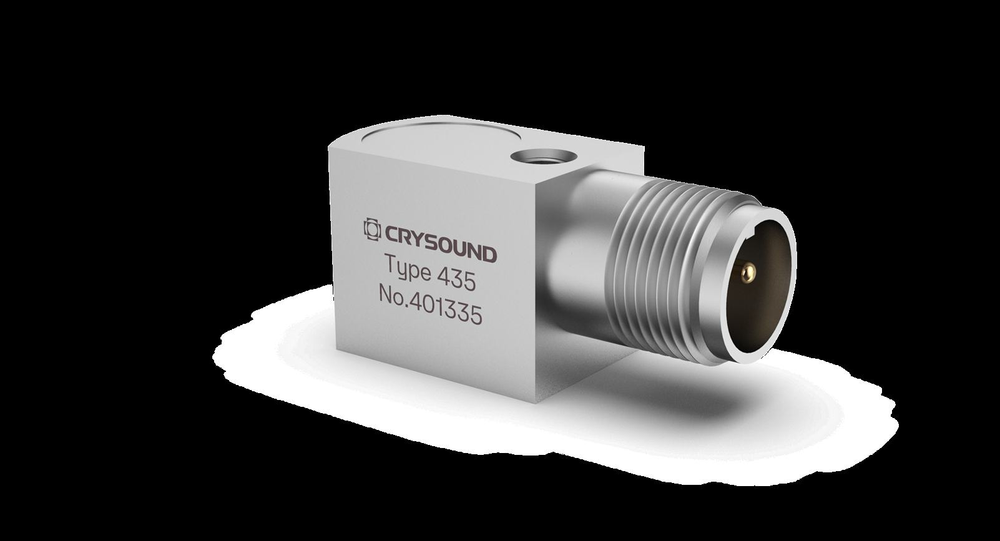
CRY435
High-sensitivity 100 mV/g IEPE accelerometer with ruggedized 2-pin MIL-C-5015 connector. Larger 70g body for harsh industrial and military environments. ±50g measuring range.
| Sensitivity | 100 mV/g |
| Frequency Response | 1 Hz – 6 kHz (±10%) |
| Measuring Range | ±50 g (peak) |
| Power Supply | IEPE (2–10 mA) |
| Connector | 2-pin MIL-C-5015 |
| Weight | 70 g |
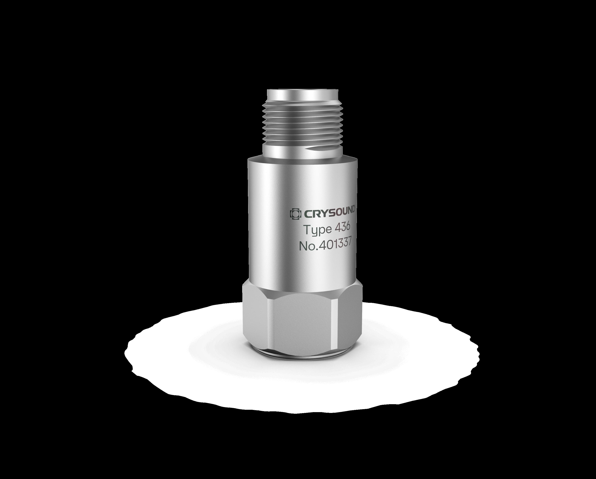
CRY436
High-sensitivity 100 mV/g IEPE accelerometer with ruggedized 2-pin MIL-C-5015 connector. 48g body for harsh environments with wide frequency response up to 20 kHz (±3 dB).
| Sensitivity | 100 mV/g |
| Frequency Response | 1 Hz – 12 kHz (±10%) |
| Measuring Range | ±50 g (peak) |
| Power Supply | IEPE (2–10 mA) |
| Connector | 2-pin MIL-C-5015 |
| Weight | 48 g |
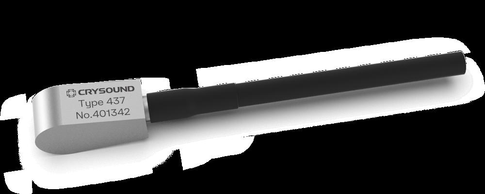
CRY437
Ultra-miniature IEPE accelerometer weighing only 2g with M5 connector. Ideal for lightweight structures and small components where mass loading must be minimized. ±500g range.
| Sensitivity | 10 mV/g |
| Frequency Response | 2 Hz – 8 kHz (±1 dB) |
| Measuring Range | ±500 g (peak) |
| Power Supply | IEPE (2–10 mA) |
| Connector | M5 |
| Weight | 2 g |
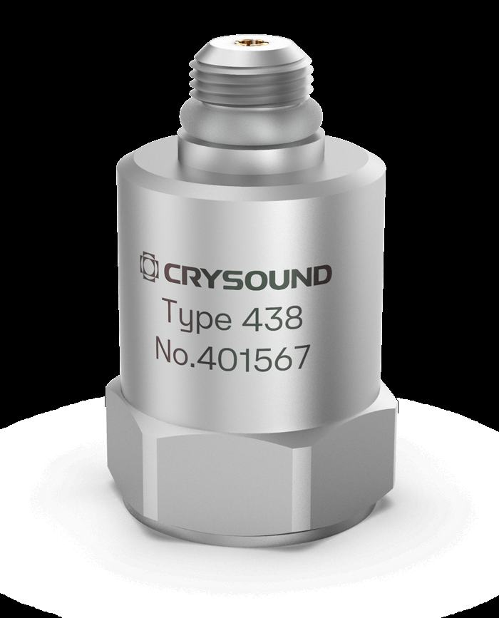
CRY438
IEPE accelerometer with Top M5 connector and wide frequency response up to 10 kHz (±1 dB). High ±500g peak range for vibration environments requiring both high SPL and wide bandwidth.
| Sensitivity | 10 mV/g |
| Frequency Response | 1 Hz – 10 kHz (±1 dB) |
| Measuring Range | ±500 g (peak) |
| Power Supply | IEPE (2–10 mA) |
| Connector | Top M5 |
| Weight | 9.5 g |
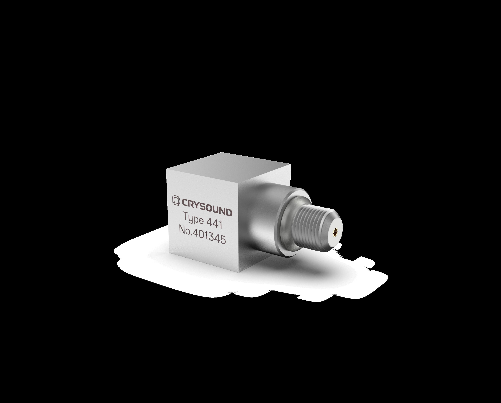
CRY441 Charge Accelerometer
Charge-mode piezoelectric accelerometer with ±2500g peak range. Self-powered, ideal for high-shock testing in harsh environments where IEPE power is unavailable.
| Sensitivity | 5 pC/g |
| Frequency Response | 1 Hz – 10 kHz (±10%) |
| Measuring Range | ±2500 g (peak) |
| Power Supply | Self-powered (Charge) |
| Connector | Side M5 |
| Weight | 7.5 g |
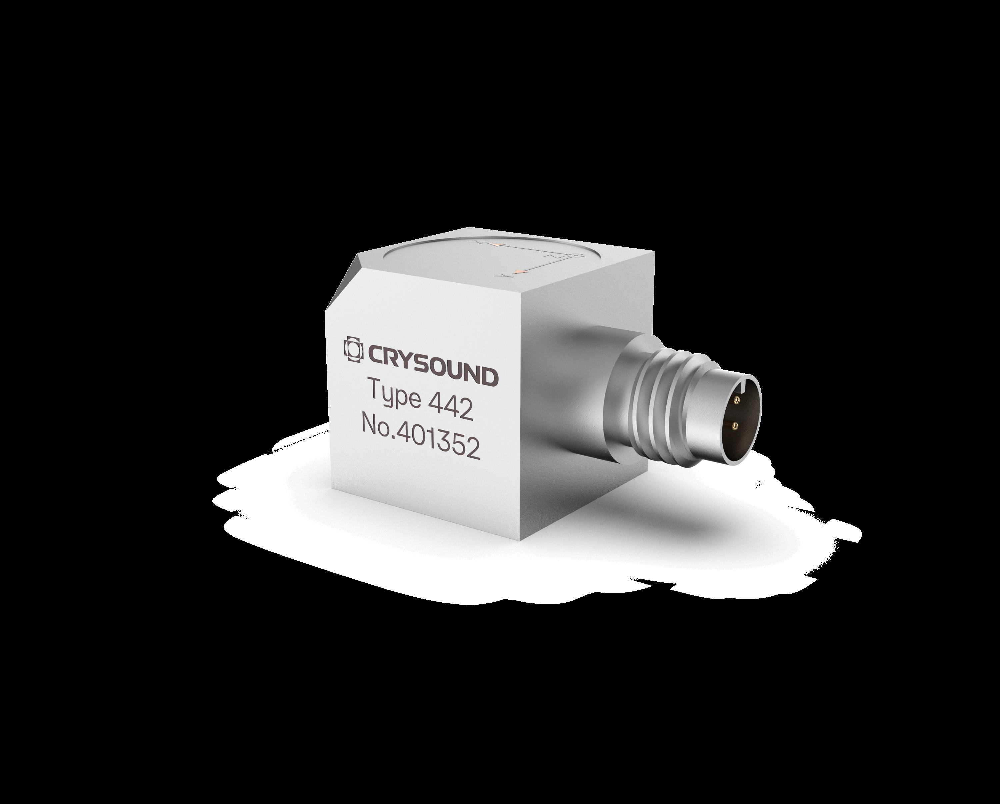
CRY442
High-sensitivity 100 mV/g IEPE accelerometer with 1/4-28 4-pin connector. Wide frequency range down to 0.5 Hz for low-frequency structural and machinery vibration monitoring.
| Sensitivity | 100 mV/g |
| Frequency Response | 0.5 Hz – 5 kHz (±1 dB) |
| Measuring Range | ±50 g (peak) |
| Power Supply | IEPE (2–10 mA) |
| Connector | 1/4-28 4-pin |
| Weight | 18 g |
CRY443
Industrial IEPE accelerometer with Side M12 4-pin connector. 50 mV/g sensitivity with ±100g measuring range. Robust 95g body for heavy machinery vibration monitoring.
| Sensitivity | 50 mV/g |
| Frequency Response | 1 Hz – 4 kHz (±10%) |
| Measuring Range | ±100 g (peak) |
| Power Supply | IEPE (2–10 mA) |
| Connector | Side M12, 4-pin |
| Weight | 95 g |
CRY445
High-sensitivity 100 mV/g industrial accelerometer with Side M12 4-pin connector. ±80g peak range for precise machinery vibration monitoring in industrial environments.
| Sensitivity | 100 mV/g |
| Frequency Response | 1 Hz – 4 kHz (±1 dB) |
| Measuring Range | ±80 g (peak) |
| Power Supply | IEPE (2–10 mA) |
| Connector | Side M12, 4-pin |
| Weight | 95 g |
CRY446
Compact IEPE accelerometer with Side 1/4-28 4-pin connector and high ±500g measuring range. For shock and vibration testing requiring high SPL tolerance.
| Sensitivity | 10 mV/g |
| Frequency Response | 1 Hz – 5 kHz (±1 dB) |
| Measuring Range | ±500 g (peak) |
| Power Supply | IEPE (2–10 mA) |
| Connector | Side 1/4-28 4-pin |
| Weight | 12 g |
Sound Sources
CRY3611 Reference Speaker
Far-field coaxial reference sound source for precise acoustic testing. Low distortion and wide frequency response. 94 dB ±0.2 dB output SPL after compensation (100 Hz–15 kHz).
| Output SPL | 94 dB ±0.2 dB (after comp.) |
| THD (94dB) | <1% (typ. <0.5%) |
| Max Power | 45 W continuous |
| Loudspeaker | 165 mm coaxial |
| Dimensions | 300 × 240 × 120 mm |
Sound Calibrators
CRY563A Sound Calibrator
Portable ½-inch sound calibrator with dual SPL output of 94 dB and 114 dB. High stability, small size, and low power consumption for accurate field calibration of sound level meters and microphones.
| SPL Levels | 94 dB / 114 dB |
| Mic Size | ½″ |
| Stability | High |
| Power | Low consumption |
CRY3018 Sound Calibrator
Portable high-precision calibrator compliant with IEC 60942:2017 Class 1. Dual SPL (94/114 dB), dual frequency (250/1000 Hz). Built-in temp/humidity/barometric compensation, OLED display, USB-C charging, carbon-fiber housing.
| SPL Levels | 94 dB / 114 dB |
| Frequencies | 250 Hz / 1000 Hz |
| SPL Accuracy | <0.2 dB |
| THD+N | <1% |
| Mic Support | 1″, ½″, ¼″, ⅛″ |
| Standard | IEC 60942:2017 Class 1 |
Microphone Power Supplies
CRY575
Three-channel microphone power supply. Channels 1 & 2 provide constant current for IEPE preamplifiers; Channel 3 provides constant voltage for single-supply preamplifiers. Switchable gain 0/+20/+40 dB.
| Channels | 3 (2× IEPE + 1× Const. Voltage) |
| Frequency Response | 10 Hz – 60 kHz (±0.5 dB) |
| Gain Options | 0 dB / +20 dB / +40 dB |
| Background Noise | –103 dBV |
| Interface | BNC / DB9 |
CRY575L
Two-channel microphone power supply providing constant voltage for single-supply preamplifiers. High input impedance, low output impedance, low background noise (–119 dBV), and wide 10 Hz–60 kHz frequency response.
| Channels | 2 (Constant Voltage) |
| Frequency Response | 10 Hz – 60 kHz (±0.5 dB) |
| Gain Options | 0 dB / +20 dB |
| Background Noise | –119 dBV |
| Interface | BNC input / DB9 output |
Accessories
TA0701
Type 1 adapter designed for sound leakage measurements of circumaural and supra-aural headphones. Complies with IEC 60318-1 standard.
| Standard | IEC 60318-1 |
| Application | Circumaural & supra-aural headphones |
TA0501
Adapter ring for connecting a ½-inch microphone to a 1-inch preamplifier.
| Connection | ½″ mic → 1″ preamp |
| Type | Standard Ring |
TA0502
Adapter ring for connecting a ¼-inch microphone to a ½-inch preamplifier.
| Connection | ¼″ mic → ½″ preamp |
| Type | Standard Ring |
TA0503
Adapter ring for connecting a ½-inch microphone to a ¼-inch preamplifier.
| Connection | ½″ mic → ¼″ preamp |
| Type | Standard Ring |
TA0515
Base-type adapter for connecting a ½-inch microphone to a ¼-inch preamplifier. Suitable for use with the CRY318 artificial ear and ear simulators.
| Connection | ¼″ mic → ½″ base-type |
| Compatible | CRY318 artificial ear |
TA0517
Base-type adapter for connecting a 1-inch microphone to a ½-inch preamplifier. Compatible with the CRY317 6cc coupler.
| Connection | ½″ mic → 1″ base-type |
| Compatible | CRY317 6cc coupler |
Electrostatic Actuators
TA0301
1-inch electrostatic actuator compliant with IEC 61094-6. Used to test the frequency response of 1-inch microphones and ½-inch microphones (with adapter required).
| Standard | IEC 61094-6 |
| Primary Size | 1″ |
| With Adapter | ½″ |
TA0302
½-inch electrostatic actuator conforming to IEC 61094-6. Tests frequency response of ½-inch microphones, ¼-inch and ⅛-inch microphones with adapters.
| Standard | IEC 61094-6 |
| Primary Size | ½″ |
| With Adapter | ¼″, ⅛″ |
No products match your search. Clear search